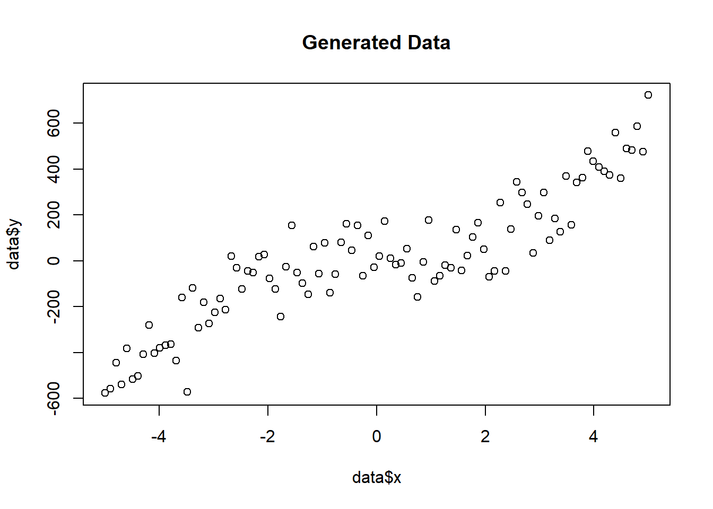
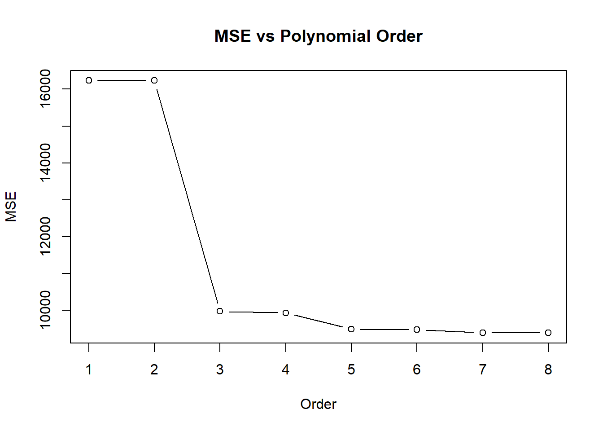
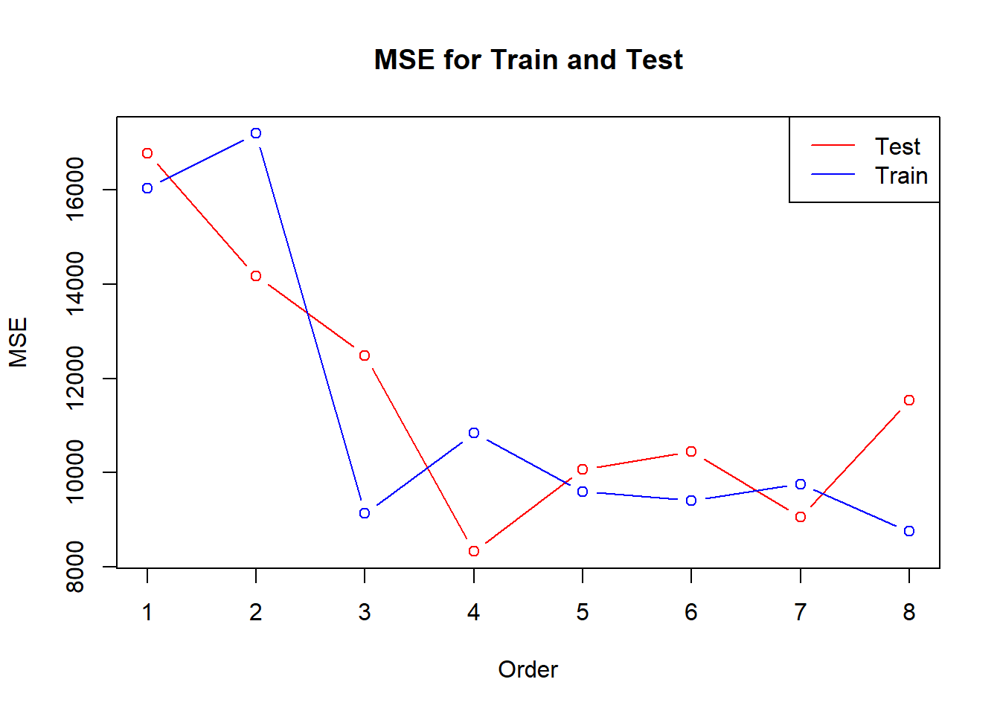
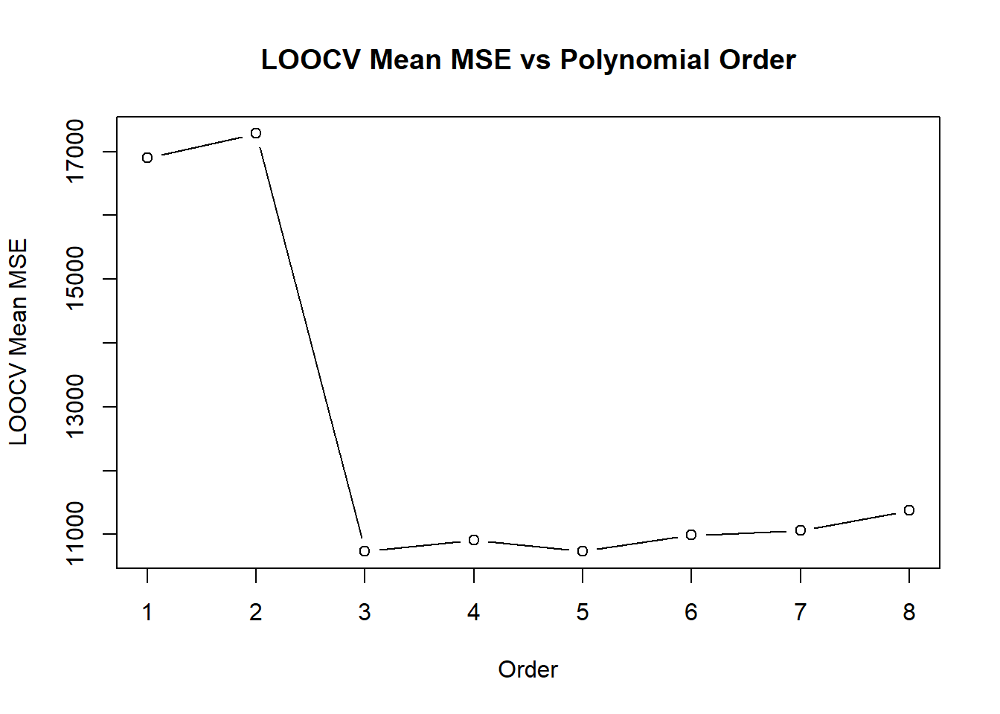

library(caret)
library(ggplot2)Polynomial Regression Analysis
Exploring Overfitting and Model Selection with Generated Data
In this project, we explore the concepts of overfitting and model selection using polynomial regression on generated data. The goal is to understand how polynomial order affects model performance and to use techniques such as train-test split and Leave-One-Out Cross-Validation to select the appropriate model. Through this analysis, we demonstrate key data science skills, including data generation, function creation and documentation, model evaluation, and visualization.
First, we load the necessary libraries.
Next, we generate synthetic data with a known underlying polynomial relationship and add some noise to it. The ability to create synthetic data is an essential skill in data science.
#' Generate synthetic data with noise
#'
#' @return A data frame containing the generated data with x and y columns
generate_data <- function() {
# Standard deviation of the noise to be added
noise_std <- 100
# Set up the input variable, 100 points between -5 and 5
x <- seq(-5, 5, length.out = 100)
# Calculate the true function and add some noise
y <- 5 * x^3 - x^2 + x + rnorm(length(x), mean = 0, sd = noise_std)
# Combine x and y into a data frame and return
data <- data.frame(x = x, y = y)
return(data)
}
data <- generate_data()
plot(data$x, data$y, main = "Generated Data")
We create a function to calculate the MSE for a given polynomial order and document it using Roxygen2-style comments (as we do with all the functions we create).
#' Calculate Mean Squared Error (MSE) for a polynomial regression model
#'
#' @param x A numeric vector of predictor values
#' @param y A numeric vector of response values
#' @param poly_order An integer representing the polynomial order
#'
#' @return The MSE of the polynomial regression model
get_mse <- function(x, y, poly_order) {
# Construct design matrix of given order
X <- as.matrix(cbind(1, poly(x, poly_order, raw = TRUE)))
# Solve for coefficients
coefs <- solve(t(X) %*% X, t(X) %*% y)
pred_y <- X %*% coefs
# Calculate MSE
mse <- mean((pred_y - y)^2)
return(mse)
}We calculate the MSE for polynomial orders from 1 to 8 and plot the results.
orders <- 1:8
mse_values <- sapply(orders, function(p) get_mse(data$x, data$y, p))
plot(orders, mse_values, type = "b", main = "MSE vs Polynomial Order", xlab = "Order", ylab = "MSE")
We use a random split to divide the data into training and testing sets, then calculate the MSE for both sets.
set.seed(3)
#' Calculate MSE for train and test sets using random split
#'
#' @param x A numeric vector of predictor values
#' @param y A numeric vector of response values
#' @param poly_order An integer representing the polynomial order
#'
#' @return A numeric vector containing the test and train MSE
get_mse_randomsplit <- function(x, y, poly_order) {
# Construct design matrix of given order
X <- as.matrix(cbind(1, poly(x, poly_order, raw = TRUE)))
# Split data into training and testing sets
train_indices <- createDataPartition(y, p = 0.7, list = FALSE)
X_train <- X[train_indices, ]
X_test <- X[-train_indices, ]
y_train <- y[train_indices]
y_test <- y[-train_indices]
# Solve for coefficients
coefs <- solve(t(X_train) %*% X_train, t(X_train) %*% y_train)
pred_y_test <- X_test %*% coefs
pred_y_train <- X_train %*% coefs
# Calculate MSE for test and train sets
mse_test <- mean((pred_y_test - y_test)^2)
mse_train <- mean((pred_y_train - y_train)^2)
return(c(mse_test, mse_train))
}We plot the MSE for both training and testing sets across different polynomial orders.
mse_randomsplit <- sapply(orders, function(p) get_mse_randomsplit(data$x, data$y, p))
plot(orders, mse_randomsplit[1, ], type = "b", col = "red", ylim = range(mse_randomsplit), ylab = "MSE", xlab = "Order", main = "MSE for Train and Test")
lines(orders, mse_randomsplit[2, ], type = "b", col = "blue")
legend("topright", legend = c("Test", "Train"), col = c("red", "blue"), lty = 1)
We implement Leave-One-Out Cross-Validation to evaluate the model.
#' Perform Leave-One-Out Cross-Validation (LOOCV) for a polynomial regression model
#'
#' @param x A numeric vector of predictor values
#' @param y A numeric vector of response values
#' @param poly_order An integer representing the polynomial order
#'
#' @return A numeric vector containing the mean and standard deviation of LOOCV MSE
get_LOOCV <- function(x, y, poly_order) {
# Construct design matrix of given order
X <- as.matrix(cbind(1, poly(x, poly_order, raw = TRUE)))
# Initialize vector for CV errors
CV <- numeric(length(x))
for (i in 1:length(x)) {
X_train <- X[-i, , drop = FALSE]
X_test <- X[i, , drop = FALSE]
y_train <- y[-i]
y_test <- y[i]
# Solve for coefficients
coefs <- solve(t(X_train) %*% X_train, t(X_train) %*% y_train)
pred_y <- X_test %*% coefs
# Calculate MSE for the left-out observation
CV[i] <- mean((pred_y - y_test)^2)
}
cv_mean <- mean(CV)
cv_sd <- sd(CV)
return(c(cv_mean, cv_sd))
}We calculate and plot the LOOCV results for different polynomial orders.
loocv_results <- sapply(orders, function(p) get_LOOCV(data$x, data$y, p))
plot(orders, loocv_results[1, ], type = "b", ylab = "LOOCV Mean MSE", xlab = "Order", main = "LOOCV Mean MSE vs Polynomial Order")
By generating synthetic data and applying polynomial regression, we explored the impact of model complexity on performance. Using techniques such as train-test split and LOOCV, we evaluated our models and highlighted the importance of proper model selection to prevent overfitting. Additionally, we showed that creating functions and documenting them using Roxygen2-style comments is a crucial skill for maintaining clear and understandable code, which is essential for collaborative data science work and reproducibility.